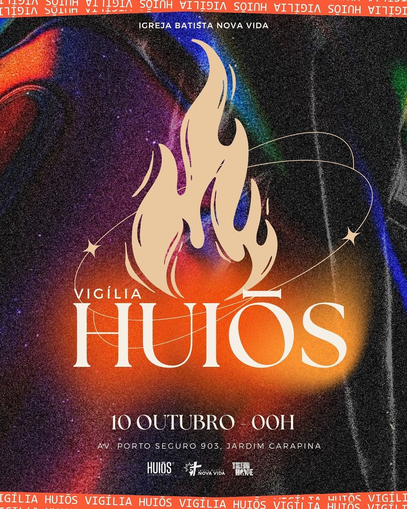

Vigília HUIŌS
Uma noite de louvor, oração e busca pela presença de Deus!

Junte-se a nós para uma noite de poderosa comunhão e renovo espiritual. Serão horas dedicadas à oração, adoração e à palavra, fortalecendo nossa fé e buscando a face de Deus juntos como igreja.
Informações do Evento:
- Data: 10 de outubro de 2025
- Horário: Início sexta-feira, 00:00h | Término sábado, 05:00h
- Local: Av. Porto Seguro, 903, Jardim Carapina, Serra/ES
- Valor da Inscrição: Isento
Não há vagas limitadas para a presença do Espírito Santo. Venha com seu coração aberto e prepare-se para um tempo inesquecível de intimidade com Deus.
Confirme sua Presença Voltar para EventosMomentos de Fé e Oração
Confira alguns registros das nossas últimas vigílias de oração.